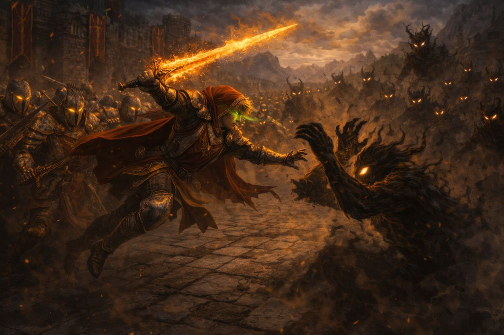

Раздел открыт
Сказки Мертвеца
Том I
Легенда о короле докаинов
История Дана — подростка, который не успел стать воином, но уже потерял отца, и Дариуса — тени с глазами, как снег, которая ищет своё место среди людей.
«Не ищи здесь героев. Их не существует. Здесь есть только люди… и те, кого они называют чудовищами.»

Вход в историю
Тёмный день уже наступил
Все вокруг становятся злее. Люди убивают друг друга. В небе сгущается тьма. Между героями этой истории — война, культы, чёрная материя, изменённые существа и мёртвые боги.
Эту историю рассказывает сам мертвец. А он врать не умеет. Если ты не боишься услышать правду от тех, кто давно должен был молчать — открой книгу. И не закрывай глаза.
Архив первого тома
История начинается не с первой страницы
Каждый человек, королевство и древний артефакт уже прожили свою жизнь задолго до того, как ты открыл эту историю.
↗
Раздел открыт
Фракции
Докаины, Фраустер, Майзервин, Паладины и Культ Доронто03
Раздел готовится
Мир
История мира и законы его тёмной материи04
Архив ещё не открыт
Локации
Королевства, крепости и забытые земли05
Раздел готовится
Артефакты
Предметы, которые сами выбирают хозяевО первом томе
Легенда о короле докаинов
Первый том серии «Сказки Мертвеца» открывает историю людей и тех, кого они называют чудовищами.
- Статус
- Том I
- Чтение
- Доступно
- Открытые разделы
- 2 из 5
Первая сказка ждёт
Начать читать
Неважно, какую страницу ты откроешь первой. Рано или поздно все они приведут тебя к одной и той же сказке.
Открыть книгу